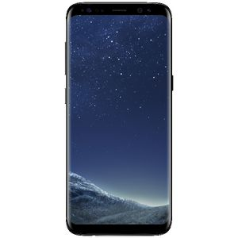

Samsung Galaxy S8 64GB
 Samsung labākās sērijas Galaxy S astotās paaudzes modelis nojauc robežas starp reālo un digitālo pasauli. Jaunais, apbrīnojami elegantais 5,8 collu Infinity Display ekrāns sniedzas no vienas tālruņa malas līdz otrai, veidojot nepārtraukti gludu virsmu, ko ieskauj teju nemanāma apmale. Unikālais acs skeneris ļauj atbloķēt ierīci un pierakstīties lietotāja kontos, nolasot varavīksneni, savukārt virtuālais asistents Bixby palīdz visos dienas darbos. Visas lieliskās iespējas „iesaiņotas” skaistā, no putekļiem un ūdens sargājošā stikla un alumīnija korpusā.
Apple iPhone X 256GB
iPhone sērijas desmit gadu jubilejas modelī iPhone X īstenota Apple vīzija par viedtālruni, kura virsmu pilnībā klāj ekrāns. To ieskaujošās malas ir tik plānas, ka pirmais Apple OLED tehnoloģijas 5,8 collu Super Retina ekrāns burtiski saplūst ar apkārtējo vidi. Modernais telefons ar eleganti noapaļotiem stūriem arī ir ļoti gudrs, jo vienlīdz labi reaģē uz pieskārienu, balsi un arī skatienu. No nerūsējoša tērauda izgatavoto viengabala korpusu no abām pusēm klāj visizturīgākais stikls, kāds jebkad izmantots viedtelefoniem, turklāt ierīce ir nocietināta pret ūdeni, putekļiem un tā atbalsta bezvadu uzlādi.